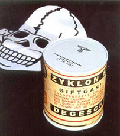

Le cose semplici, le complicazioni piu’ BESTIALI
Devo cucinare? bene, e’ l’una, finisce IL GAS.

chiamo il bombolaro, viene tra un’ora. allora smonto la vecchia bombola.
il regolatore di pressione mi si apre in due nelle mani.
lo rimonto, vedo che c’e’ una o-ring mangiata. la elimino, lo rimonto.
arriva il bombolaro, volevo la bombola da 10, mi ha portato quella da QUINDICI chili.
la porto su’ per le scale con le ginocchia a pezzi.
la monto, accendo. il regolatore perde il gas. lo rismonto, lo rimonto, continua a perdere gas. ed intanto si sono fatte le 15, e sono digiuno.
esco e vado a mangiare fuori. compro un nuovo regolatore di pressione, lo ficco in tasca e bestemmio il cristo impazzito.
Le cose semplici, le complicazioni PIU’ BESTIALI.
devo rimontare un case. cerco le viti, quelle grosse.
ho una scatola contenente ottomila viti.
Ne prendo una, e’ della misura giusta. la guardo bene. E’ TORX.
La GETTO NEL CESTINO.
ne prendo un’altra, perfetta. la guardo meglio. UN’ALTRA TORX.
MALEDICO chi ha messo delle viti TORX nella scatola delle viti e la getto VIA.
Ne prendo un’altra, e’ ok, ma gia’ lo so – LA GUARDO MEGLIO, COSA SARA’ ? TORX.
MALEDICO CRISTO, LA GETTO VIA.
RIVERSO il contenuto della scatola delle viti sul tavolo, ESAMINO le viti una ad una, trovo circa 1181 TORX e le GETTO NEL CESTINO, solo ALLA FINE trovo le 3 viti che mi servivano per chiudere IL FOTTUTO CASE DI MERDA.
Le cose semplici, le complicazioni PIU’ BESTIALI.
installo il pc con xubuntu. ci metto 3 ore a capire che la scheda di rete mi sta prendendo per il culo, si aggancia al dhcp poi chissa’ perche’ smette di funzionare. ma cazzo, il dhcp lo prende, perche’ non pinga. sara’ il cavo? sara’ il router di merda, sara’ lo switch arp-poisonato dal porco di dio? no, e’ la porco dio di scheda di rete. e’ morta sotto il martello, a pezzi, mi sento meglio.
installo sta ubuntu. ci sta 1 ora, perche ho solo 128 mega ram. spunto gli aggiornamenti, l’hd rumoreggia. setto il sources.lst giusto, l’hd rumoreggia. Ci sono 348 mega di pacchetti da scaricare/aggiornare, l’hd rumoreggia. Scarica e fa tutto.
arriva alla fine, installa tutto, reboot, l’hard disk rumoreggia e poi fa’ STA-TRANK!
e si PIANTA TUTTO, e l’hard disk non riparte MAI PIU’. Ovviamente A FINE INSTALLAZIONE, cioe’: ho perso 4 ore per niente.
Le cose semplici, le COMPLICAZIONI PIU’ BESTIALI